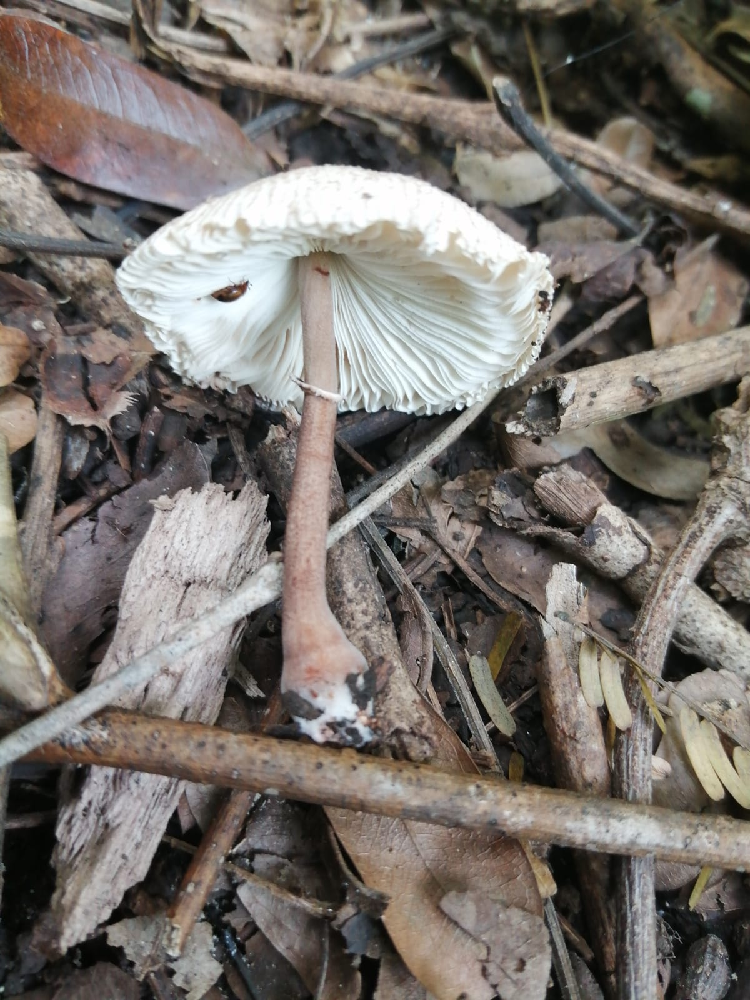
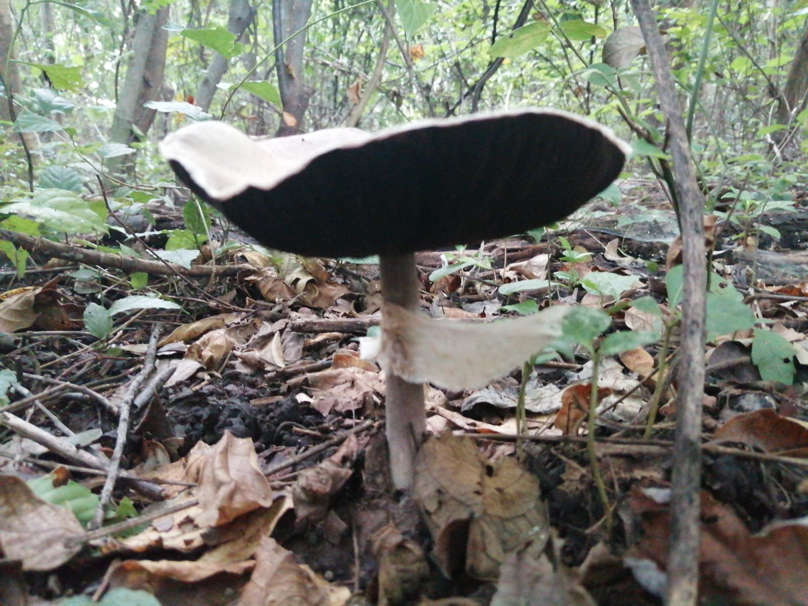

LOS HONGOS
Los hongos son un grupo diverso de organismos que pertenecen al reino Fungi. A diferencia de las plantas,
no
realizan fotosíntesis y, en lugar de producir su propio alimento, obtienen nutrientes descomponiendo materia
orgánica. Los hongos pueden encontrarse en casi todos los ecosistemas de la Tierra y juegan un papel vital en la
ecología y la vida humana.


Los hongos son los principales descomponedores de materia orgánica en los ecosistemas terrestres. Se
alimentan de material muerto como hojas, madera y restos de animales. Al descomponer este material, liberan
nutrientes esenciales como nitrógeno, fósforo y carbono al suelo, lo que mejora la fertilidad del suelo y
permite que las plantas los reutilicen para crecer. Este proceso es vital para el ciclo de nutrientes en la
naturaleza.
¿DONDE PUEDES ENCONTRARLOS?
Se encuentran presente prácticamente en todas partes y
se les puede encontrar creciendo en materia orgánica como el suelo, los alimentos y la materia vegetal.
Usualmente se encuentran en las zonas de mas humedad